01_Siemens - Siemens 802D / 810D / 840D / 828D
1. Introduction to Siemens CNC systems
Siemens CNC systems are industrial computer numerical control platforms used to control machine-tool movements, machining programs, spindle operation, auxiliary functions and machine automation.
The four controller families in this topic are:
- SINUMERIK 802D: A compact CNC family designed for simpler machine-tool applications, with capabilities depending on the version.
- SINUMERIK 810D: An older integrated CNC and digital drive-control platform used in machine tools requiring coordinated axis and spindle control.
- SINUMERIK 840D: A higher-capability CNC family designed for complex machine tools, with capabilities depending on the generation and configuration.
- SINUMERIK 828D: A compact CNC platform designed particularly for turning and milling machines, integrating CNC, PLC and operator-interface functions.
These are not four software versions of one identical controller. They represent different generations, architectures, application targets and integration approaches.
A machine's actual capabilities depend on the specific controller generation, firmware, hardware, installed options, PLC program and machine-tool builder's implementation.
2. Where Siemens CNC fits in a machine
A CNC machine requires more than a controller that reads G-code. It must interpret machining commands, coordinate axes, regulate motion, operate machine mechanisms and verify that required conditions have been met.
A simplified Siemens CNC architecture is:
OPERATOR / PROGRAM
|
v
SINUMERIK HMI
|
v
CNC INTERPRETER
|
v
MOTION PLANNING / CONTROL
|
+-----------+-----------+
| |
v v
Axis control Spindle control
| |
v v
Servo drives Spindle drive
| |
v v
Servo motors Spindle motor
| |
v v
Axis mechanics Tool rotation
| |
+-----------+-----------+
|
v
Feedback to control
CNC <------> PLC / machine sequence logic
|
+-----------+-----------+
| | |
v v v
Tool change Coolant Clamping
and ATC system system
The diagram is conceptual. The physical arrangement and integration differ across SINUMERIK generations.
Main subsystems
| Subsystem | Function |
|---|---|
| CNC kernel | Interprets machining commands and coordinates motion |
| HMI | Provides operator interaction, program management and diagnostics |
| PLC | Controls machine sequences and auxiliary functions |
| Drive system | Controls servo axes and spindle operation |
| Feedback system | Supplies position and speed information |
| Machine data | Defines controller and machine-specific behaviour |
| Part program | Specifies the machining operations |
| Communication interfaces | Connect CNC, PLC, drives and peripheral devices |
3. SINUMERIK 802D
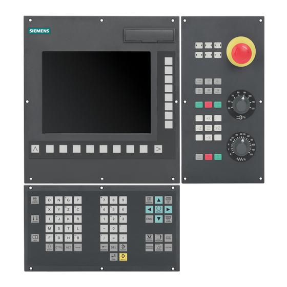
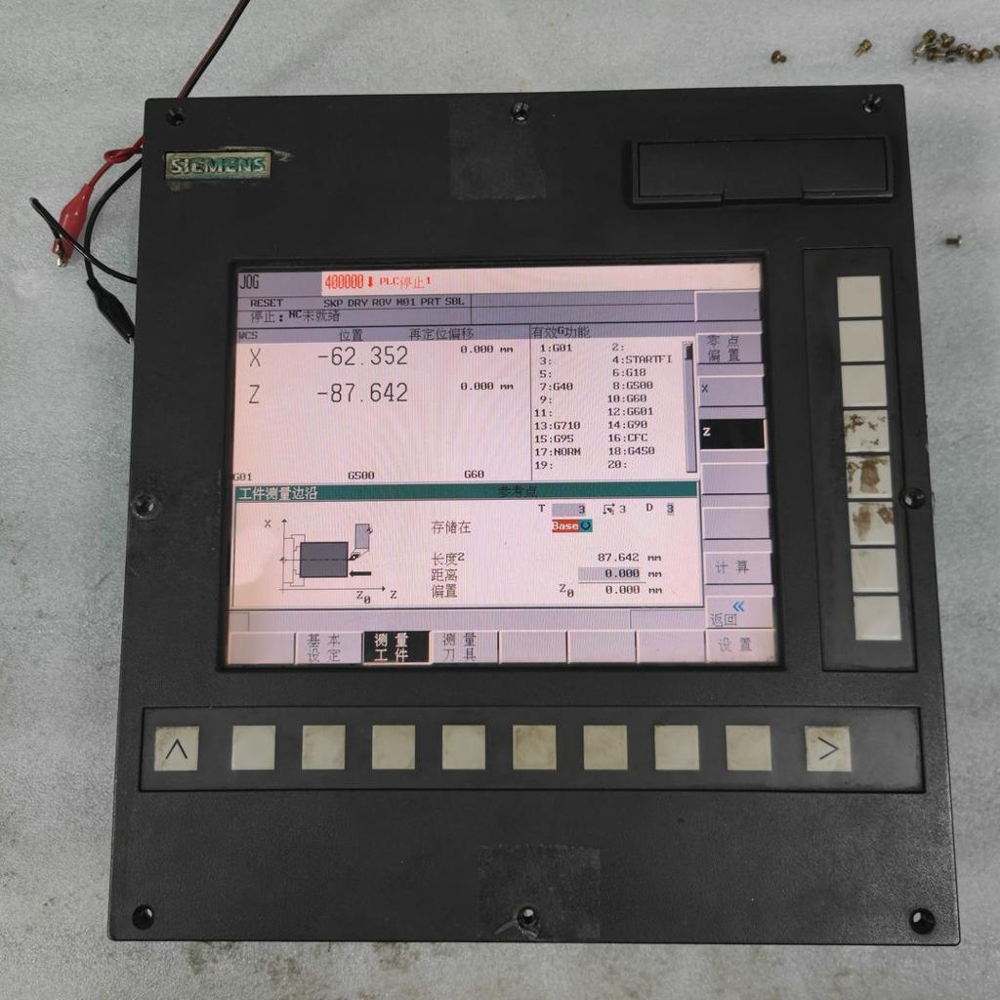
The SINUMERIK 802D family was developed as a compact CNC solution for machine tools with more limited requirements than high-end complex machining systems.
Its exact functions depend on the particular 802D variant and machine-builder configuration.
Typical applications
- CNC lathes.
- Compact milling machines.
- Basic production machining.
- Training and conventional CNC automation applications.
Main functions
- CNC part-program execution.
- Axis positioning and coordinated motion.
- Tool and work-offset management, as supported.
- Spindle commands and machine-function integration.
- PLC-controlled auxiliary operations.
- Alarm display and basic diagnostic functions.
Diagnostic approach
When troubleshooting an 802D machine, identify the exact controller variant and use the corresponding documentation.
Check:
- CNC alarms and operating mode.
- Axis status and reference-return state.
- PLC interlocks and I/O.
- Drive readiness and feedback.
- Machine-specific configuration and electrical drawings.
Maintenance considerations
Older 802D installations may have legacy hardware, limited spare availability or software tools that are difficult to obtain.
Before replacing components, preserve the available configuration, identify compatible hardware and confirm the approved recovery procedure.
Do not assume that a backup or software package intended for another 802D variant will work on the installed controller.
4. SINUMERIK 810D
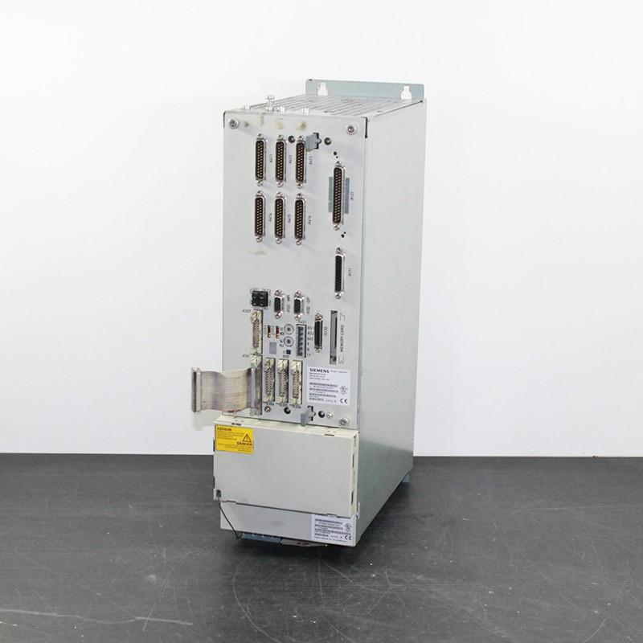
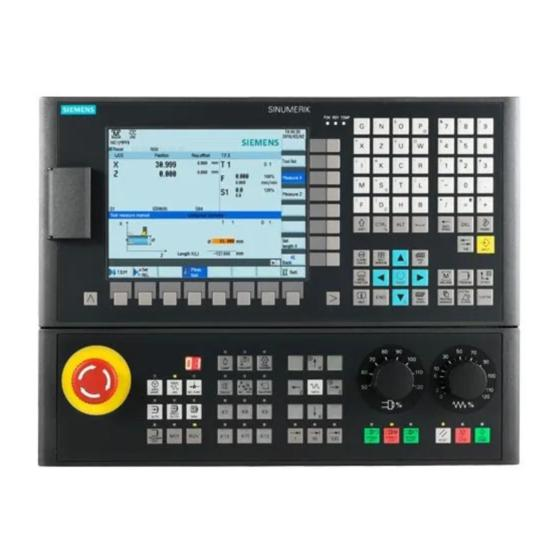
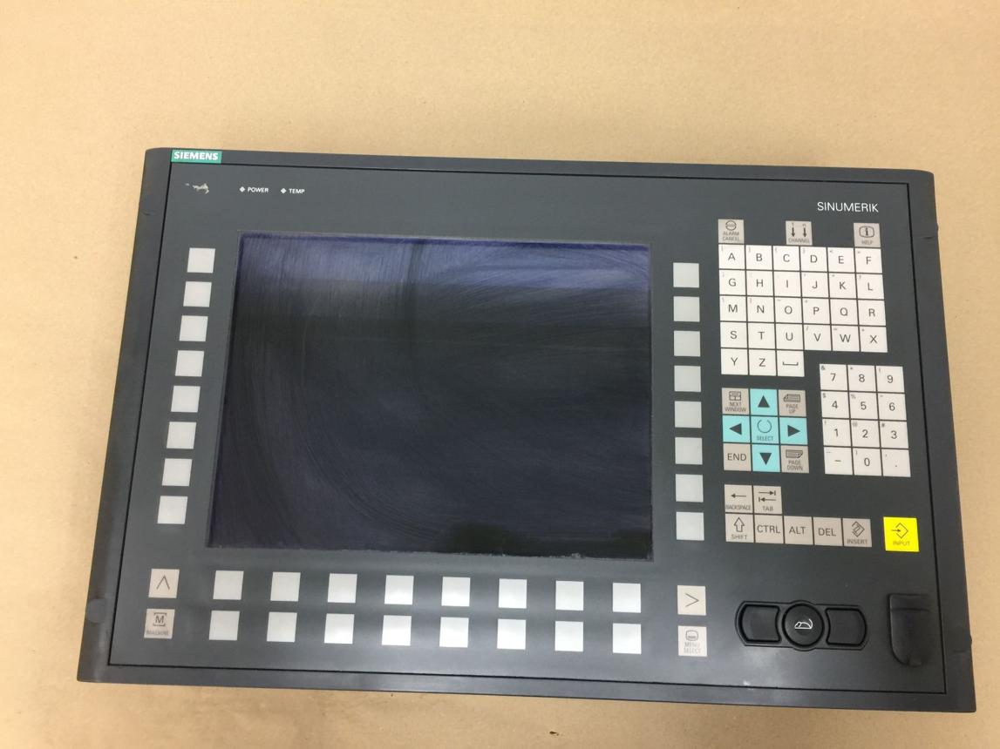
5
The SINUMERIK 810D is an older CNC platform associated with integrated digital drive-control technology.
It was used in machine tools requiring coordinated CNC motion and servo/spindle control, with the precise supported architecture depending on the installation.
Typical applications
- CNC milling machines.
- CNC turning machines.
- Machine tools with multiple controlled axes.
- Applications using integrated CNC and drive hardware.
Main architectural characteristic
The 810D integrated CNC and drive-related functionality more closely than architectures built around separate, independently selected CNC and drive platforms.
However, it still relies on motors, feedback, power electronics, PLC logic and machine-specific integration.
Common diagnostic areas
- CNC alarms and machine data.
- Axis enable and drive readiness.
- Encoder and feedback integrity.
- Reference-return operation.
- Drive and power-module status.
- PLC interlocks and auxiliary functions.
- Communication and hardware faults.
Example: Axis does not enable
An axis fails to become ready after machine startup.
A disciplined investigation checks:
- The CNC alarm and axis status.
- The required enable conditions.
- Relevant PLC and safety-system states.
- Drive and power-module diagnostics.
- Feedback and motor connection status.
- The machine's documented startup sequence.
The exact signals and diagnostic procedures depend on the controller and drive configuration.
Maintenance consideration
For legacy 810D installations, configuration capture is especially important before hardware replacement. The replacement component must be compatible with the actual system, and commissioning must follow the appropriate Siemens and machine-builder procedures.
5. SINUMERIK 840D
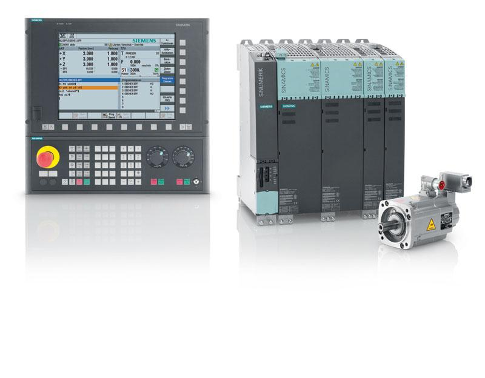
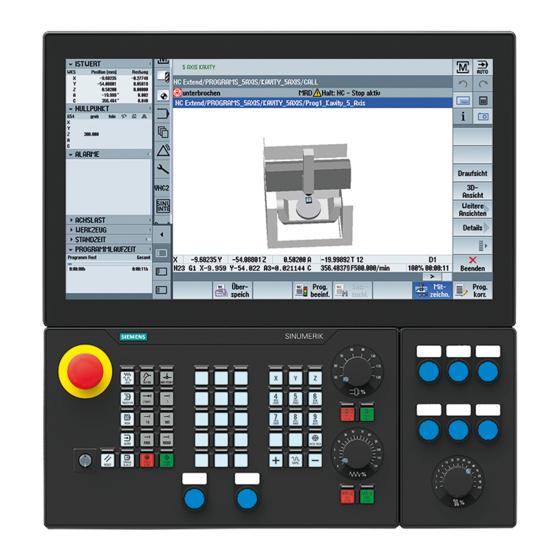
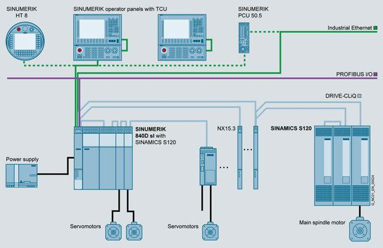
8
The SINUMERIK 840D family targets more demanding CNC applications and has existed across multiple hardware and software generations.
The 840D and 840D sl should not be treated as identical architectures. Their hardware, system software, drive arrangements and engineering workflows can differ.
Typical applications
- Complex machining centres.
- Multi-axis milling.
- CNC turning with driven tools.
- Coordinated axes and rotary axes.
- Advanced machining and machine-tool configurations.
- Machines with extensive OEM-specific automation.
Common capabilities
Depending on model, software and options, the system may support:
- Coordinated multi-axis interpolation.
- Complex machining cycles.
- Advanced tool and coordinate management.
- Multi-channel operation.
- Extensive machine data and configuration.
- Detailed diagnostics and tracing tools.
- Integrated or associated PLC control.
- Sophisticated servo and spindle control.
Not every 840D installation includes every capability.
Main diagnostic categories
| Area | Information to investigate |
|---|---|
| CNC | Active program, mode, alarm history and machine data |
| Axis | Commanded/actual position, following error and reference status |
| Drive | Readiness, drive alarms and relevant operating values |
| PLC | Interlocks, sequence states and I/O |
| Spindle | Speed, orientation and drive status |
| Feedback | Encoder state, signal integrity and position consistency |
| Network | Drive communication and distributed I/O status |
| Machine configuration | OEM-specific settings, options and software compatibility |
Example: Multi-axis positioning fault
A machine produces an inaccurate feature during simultaneous axis movement.
Possible causes include:
- Incorrect work or tool offsets.
- Incorrect program coordinates.
- Axis following error.
- Feedback issues.
- Mechanical backlash or compliance.
- Incorrect compensation data.
- Thermal effects.
- An axis-specific configuration problem.
Compare the actual behaviour of each axis and the programmed path before concluding that the CNC controller itself is defective.
Maintenance consideration
For 840D systems, preserve the complete approved recovery package rather than relying only on part-program exports. CNC data, PLC projects, drive configuration and other machine-specific files may require separate backup procedures.
6. SINUMERIK 828D
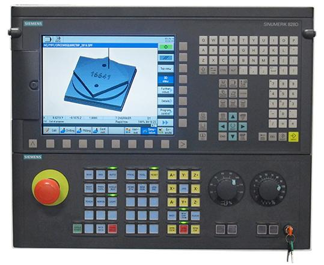
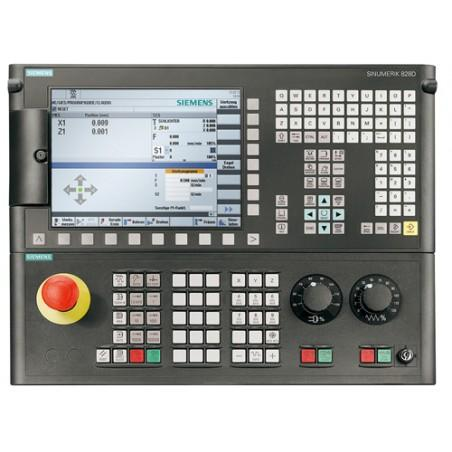
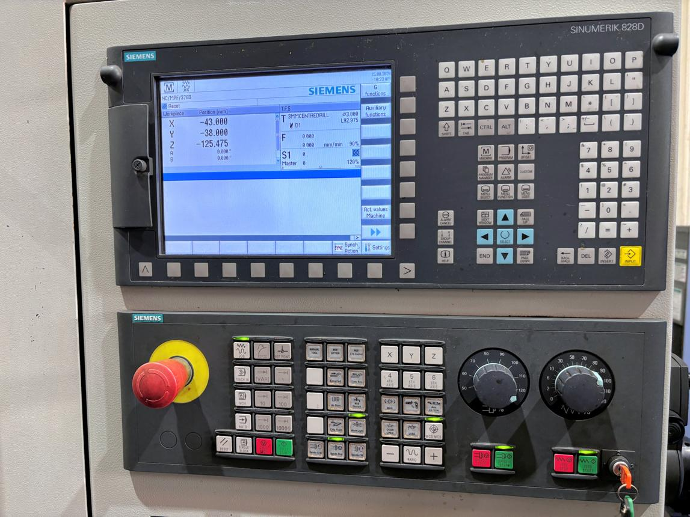
7
The SINUMERIK 828D is a compact CNC platform designed particularly for turning and milling machines. It integrates important CNC, PLC and operator-interface functions into a relatively compact system.
The exact functions depend on the installed version, machine configuration and available options.
Typical applications
- CNC turning centres.
- CNC milling machines.
- Compact production machine tools.
- Applications requiring integrated machine control and operator interaction.
Main functional areas
- CNC program execution.
- Axis and spindle control.
- Tool and work-offset management.
- PLC-controlled machine sequences.
- Operator diagnostics.
- Machine data and configuration.
- Program and data management.
Example: Tool change does not complete
The CNC executes a tool-change request, but the sequence stops.
Investigate:
- The CNC alarm and program state.
- Whether the tool-change request reached the PLC.
- The active PLC sequence step.
- Required spindle and axis conditions.
- Pneumatic or hydraulic pressure.
- Actuator outputs and physical response.
- Position and clamp feedback.
- The completion handshake and timeout condition.
The PLC sequence is often specific to the machine builder. Use the installed machine's documentation rather than assuming that all 828D machines use the same tool-change logic.
Maintenance consideration
The compact integration of the 828D simplifies some system-level arrangements, but it does not eliminate the need to understand the separate logical responsibilities of CNC, PLC, drive, feedback and mechanics.
7. Comparison of the four SINUMERIK families
| Feature | 802D | 810D | 840D | 828D |
|---|---|---|---|---|
| General category | Compact CNC | Older integrated CNC/drive platform | Higher-capability CNC family | Compact integrated CNC |
| Typical machine complexity | Relatively basic | Moderate to demanding, depending on installation | Moderate to very high | Compact production machines |
| Multi-axis capability | Variant-dependent | Configuration-dependent | Broad capability, configuration-dependent | Configuration-dependent |
| PLC integration | Yes, implementation-dependent | Yes | Yes | Integrated into the system architecture |
| Drive architecture | Variant-dependent | Integrated drive-related architecture | Generation-dependent | Compact integrated architecture |
| Diagnostic capability | Model-dependent | Legacy system tools | Extensive, model-dependent | Integrated diagnostic facilities |
| Backup requirements | Controller and OEM-specific data | CNC and drive-related data | Broad system recovery package | CNC, PLC and machine-specific data |
| Important concern | Legacy compatibility | Hardware and tool compatibility | Generation and configuration differences | Version and OEM configuration differences |
This table describes broad architectural tendencies. It is not a definitive specification or a ranking of every machine built with these controls.
8. Important Siemens CNC terminology
| Term | Meaning |
|---|---|
| SINUMERIK | Siemens CNC product family |
| CNC kernel | Software that interprets programs and coordinates machining motion |
| HMI | Human-machine interface |
| PLC | Programmable logic controller responsible for machine sequencing and logic |
| NC program | Program containing machining instructions |
| Machine data | Configuration values used by the CNC system |
| Setting data | Values that configure or influence operation, according to the system |
| Drive data | Configuration and operating data associated with drives |
| Axis | A controlled linear or rotary movement |
| Spindle | Rotating drive used for machining or tool rotation |
| Interpolation | Coordinated motion between controlled axes |
| Reference return | Procedure establishing a known reference for machine position |
| Work offset | Coordinate transformation defining the workpiece origin |
| Tool offset | Data describing tool geometry or wear compensation |
| Following error | Difference between commanded and measured position under the controller's definition |
| PLC handshake | Exchange of request, status and completion signals between control functions |
| Archive | A packaged collection of selected controller data |
| Trace | Time-based capture of selected signals for investigation |
Machine data versus setting data
These terms should not be used interchangeably without checking the specific SINUMERIK documentation.
Machine data generally configures machine or control behaviour. Setting data commonly contains values used to configure operational behaviour or settings within a particular control. Exact categories, names and persistence rules depend on the generation.
9. SINUMERIK programming fundamentals
SINUMERIK controls support CNC programming conventions including G-codes, M-codes, tool calls, coordinate systems and machining cycles. Supported commands and syntax vary by controller generation and configuration.
Example: Basic milling sequence
N10 G17 G90 G54
N20 T1 D1
N30 S1500 M3
N40 G0 X0 Y0
N50 G0 Z5
N60 G1 Z-2 F100
N70 G1 X50 F250
N80 G0 Z50
N90 M5
N100 M30
This is an illustrative program fragment, not a production-ready program. It assumes that the required tool, offsets, spindle configuration, workholding, clearances and machine conventions have been verified. Actual syntax and supported tool-compensation behaviour must be checked against the specific control.
Commands used
G17: Selects the XY plane on controls using the conventional meaning.G90: Selects absolute programming on controls using the conventional meaning.G54: Selects a work coordinate system where supported.T1 D1: Illustrates a tool and tool-edge/offset selection convention; exact behaviour depends on the SINUMERIK generation and configuration.S1500 M3: Requests a spindle speed and clockwise rotation under the machine's conventions.G0: Rapid movement.G1: Linear interpolation at the programmed feed.F: Feed command.M5: Spindle stop.M30: Program end and reset behaviour according to the control.
The point is to recognize the programming concepts. Never transfer a sample program directly to a production machine without simulation, machine-specific verification and the required setup checks.
10. Siemens CNC diagnostics
The diagnostic workflow is broadly similar across the four families, but the actual screens, available signals and access procedures differ.
Diagnostic workflow
Fault or abnormal machining
|
v
Record alarm and machine state
|
v
Identify CNC / PLC / drive / feedback layer
|
v
Compare expected and actual behaviour
|
v
Inspect sequence, alarms and measurements
|
v
Confirm the first failed condition
|
v
Correct and validate
Example: Reference return fails
Check:
- CNC alarm and axis status.
- Whether the axis is permitted to move.
- Reference-return mode and documented sequence.
- Reference switch or encoder feedback.
- Drive alarms and actual movement.
- Mechanical obstruction or limit activation.
- Relevant machine data only if the evidence points to a configuration issue.
Do not change reference-return parameters simply because the axis fails to home. First establish whether the problem is electrical, mechanical, feedback-related or configuration-related.
11. Backup and restoration across Siemens generations
Backup requirements depend on the actual controller and machine.
A recovery plan may need to include:
- NC programs and subprograms.
- CNC machine data and setting data.
- Tool and work-offset data.
- PLC program and relevant data.
- Drive configuration.
- HMI and OEM files.
- Hardware and software version records.
- Machine-builder documentation.
- Safety-related configuration and validation records, where applicable.
Before replacing a controller
- Identify the precise SINUMERIK family and generation.
- Record installed hardware and software versions.
- Obtain the machine builder's backup and restoration instructions.
- Capture the current approved data using supported methods.
- Verify archive scope and recoverability.
- Confirm compatibility of replacement hardware and software.
- Restore through the authorized procedure.
- Perform required commissioning, safety checks and functional validation.
Key distinction
A backup created for an 840D installation is not automatically compatible with an 840D sl installation. Similarly, an archive from one generation should not be assumed to restore directly to an 828D or 802D.
Controller family names alone are insufficient to establish compatibility.
12. Common Siemens CNC fault scenarios
| Symptom | Initial diagnostic focus |
|---|---|
| Axis not ready | CNC alarms, enable conditions, drive status and feedback |
| Reference return fails | Reference sequence, sensor/encoder, limits and mechanical movement |
| Spindle fails to start | CNC request, PLC permissives, drive readiness and speed reference |
| Tool change hangs | PLC state, permissives, actuators, sensors and handshake |
| Positioning inaccurate | Coordinates, offsets, feedback, mechanics and compensation |
| CNC cannot communicate with drive | Power, connections, network status and supported configuration |
| Programs missing | Storage, program management, access and backup availability |
| Fault after parameter change | Change history, approved baseline and compatibility |
| Controller replacement fails | Hardware/software compatibility, archive contents and commissioning |
| Intermittent alarm | Event history, wiring, power quality, vibration, temperature and network status |
Treat these as starting points for diagnosis, not universal solutions. Machine-builder logic and controller generation determine the actual troubleshooting procedure.
13. Practical exercises
Exercise 1: Identify the controller
Choose a Siemens CNC machine and record:
- Exact SINUMERIK model.
- Hardware and software generation.
- Machine type.
- Number and type of controlled axes.
- Spindle configuration.
- PLC architecture.
- Drive system.
- Communication interfaces.
- Available diagnostic and backup tools.
Do not identify a controller solely by the appearance of its operator panel.
Exercise 2: Trace a failed axis movement
Create a diagnostic record containing:
- CNC command.
- Axis enable status.
- Relevant interlocks.
- Drive-ready status.
- Commanded and actual position.
- Following error.
- Feedback status.
- Mechanical observations.
- Root cause and verification.
Exercise 3: Diagnose an incomplete tool change
Map the machine-specific sequence:
CNC request → PLC state → permissives → outputs → physical movement → sensors → completion acknowledgement
Identify which signals are available in the controller's diagnostic screens and which require authorized physical inspection.
Exercise 4: Prepare a controller replacement package
Create a checklist for the applicable Siemens generation, including:
- CNC data and programs.
- PLC source project.
- Drive configuration.
- Machine data.
- Tool and work offsets.
- HMI and OEM files.
- Software and firmware versions.
- Restoration procedure.
- Required safety and functional validation.
Exercise 5: Compare two controller generations
Compare an 802D or 810D installation with an 828D or 840D installation. Document differences in architecture, available diagnostics, backup tools, hardware compatibility and engineering software.
Use actual machine documentation for model-specific conclusions.
14. Interview questions and answers
Q1. What is SINUMERIK?
It is Siemens' family of CNC systems used to control machine-tool programs, axes, spindles and associated machine functions.
Q2. What is the broad difference between the 802D and 840D families?
The 802D targets more compact and comparatively limited applications, while the 840D family supports a broader range of complex machine-tool configurations. Exact capabilities depend on the generation and installed options.
Q3. What is the SINUMERIK 810D known for?
It is an older CNC platform associated with integrated digital drive-control technology.
Q4. What is the SINUMERIK 828D designed for?
It is a compact CNC platform aimed particularly at turning and milling machines.
Q5. What does the PLC do in a CNC machine?
It controls machine sequencing, interlocks and auxiliary functions such as tool changes, clamping and coolant.
Q6. What is machine data?
Configuration data that defines aspects of CNC and machine behaviour.
Q7. Why must controller generations be identified precisely?
Hardware, software, archive formats, diagnostics and commissioning requirements can differ between generations.
Q8. How would you diagnose a Siemens axis that is not ready?
Review CNC alarms, enable conditions, PLC interlocks, drive status, feedback and relevant machine-specific conditions.
Q9. What is reference return?
The procedure used to establish a known reference for an axis, according to the controller and machine configuration.
Q10. Why can a tool-change failure be a PLC problem rather than a CNC problem?
The CNC may issue the request correctly while the PLC waits for an unsatisfied permissive, actuator response or sensor confirmation.
Q11. What is following error?
A controller-defined measure of the discrepancy between commanded and measured axis position.
Q12. Why should machine data be backed up before a controller replacement?
It preserves the approved machine-specific configuration needed for recovery and commissioning.
Q13. Does a CNC archive necessarily include the PLC and drive configuration?
No. Its contents depend on the controller, archive method and machine integration. Separate backups may be necessary.
Q14. What should be verified after controller restoration?
System readiness, required configuration, PLC operation, drives, axes, spindle, machine functions and safety requirements as specified by the OEM.
Q15. Why should the machine-builder manual be consulted?
It documents machine-specific wiring, sequences, interlocks, configuration and recovery requirements that generic controller documentation may not cover.
Q16. Can the same diagnostic screen names be assumed across all SINUMERIK generations?
No. Menu structures, functions and access methods differ by generation and software version.
Q17. What is the difference between CNC control and drive control?
CNC control interprets machining instructions and coordinates motion. Drive control regulates motor behaviour using the relevant command and feedback signals.
Q18. Why should parameters not be changed blindly during troubleshooting?
An unjustified change can hide the real fault, create additional problems or alter machine behaviour.
Q19. What is the role of an HMI?
It provides the operator interface for program management, machine status, operation and diagnostics.
Q20. What is the most important rule when working on a legacy Siemens CNC?
Identify the exact system, preserve the approved configuration, use compatible documentation and hardware, and verify every restoration or repair using the authorized procedure.
15. Final mental model
Think of a SINUMERIK machine as five connected layers:
- Program: What machining operation is requested?
- CNC: How should the movement be calculated and coordinated?
- PLC: Are the machine conditions satisfied, and which auxiliary actions must occur?
- Drive and feedback: Does the motor follow the command, and is its position or speed measured correctly?
- Mechanics and process: Does the physical machine produce the intended result?
The controller family determines the available architecture and engineering tools, but effective maintenance still depends on tracing commands, interlocks, drive behaviour, feedback and physical operation.
The practical rule is simple: identify the exact controller generation before selecting software, backups, replacement hardware or diagnostic procedures. Similar product names are not compatibility guarantees, despite the industry's persistent enthusiasm for naming things just similarly enough to cause confusion.
Next topic:
02_PLAN_WISE_2026\02_INDUSTRY3_0\02_Auto_Tech\07_CNC\10_Systems\02_FANUC
02_FANUC - FANUC 0i / 16/18 / 21 / 30i / 31i / 32i